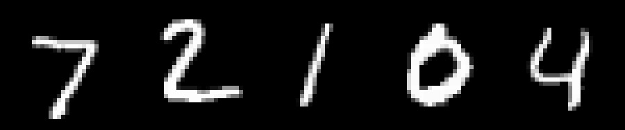
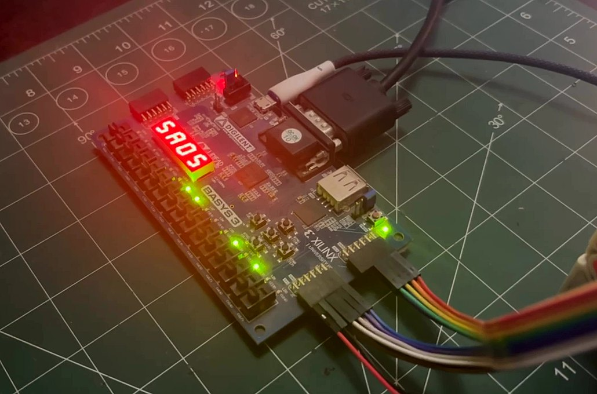

Overview
A handwritten-digit classifier trained in PyTorch, quantized to INT8, and rebuilt from scratch in Verilog, running entirely on FPGA silicon. There is no CPU, no operating system, and no soft core anywhere in the design. A camera captures the input, the chip does the math, and a seven-segment display shows the answer.
Training and quantization
The network itself is small on purpose: a 784 → 32 → 10 multilayer perceptron, trained on MNIST for eight epochs in PyTorch. Inputs are scaled to 0–255 rather than normalized, because that is the range the camera pipeline actually produces. The network is calibrated for the hardware it will run on from the first training step.
Every weight is quantized to INT8 with a symmetric per-tensor scale. Biases stay INT32, and the layer-1 accumulator is requantized with a right-shift instead of a divider, so the FPGA never needs to implement division. The accuracy cost of all this is 0.18 percentage points. The memory cost is a quarter of what it was.
What is left is exported as .mem files and loaded straight into block
ROM. From there, everything happens as hand-written Verilog state machines:
capturing the camera feed, cropping and thresholding it, running the
multiply-accumulate loop, and driving the display. There is no instruction fetch,
no driver stack, and no operating system involved.

The hardware pipeline
Seven stages, every one running every clock cycle.
01. Camera capture and configuration
The OV7670 camera is configured over SCCB at power-up: 75 register writes, no
microcontroller involved. It streams RGB565 at 640×480, 30fps.
camera_driver.v
02. Grayscale conversion and subsample
RGB565 is converted to 8-bit luma on the fly, then subsampled 2× in X and Y
down to 320×240, in the camera's own clock domain.
capture_writer.v
03. Dual-port frame buffer
Block RAM holds the live frame, with independent read ports for the VGA display and
the downsampler running at the same time.
frame_buffer.v
04. Downsample: 112×112 crop to 28×28
The frame is center-cropped, then every 4×4 block is averaged into one pixel.
Noise-suppressing and MNIST-sized in about 0.13ms.
downsampler.v
05. Preprocess: invert and threshold
Pure combinational logic: a wire with arithmetic built into it. Zero clock cycles of
latency, no state at all.
preprocessing.v
06. Inference: the network as a state machine
784×32, then 32×10 multiply-accumulates, with ReLU and shift-requantize
between layers, then argmax at the end. 50,984 cycles total.
inference_engine.v
07. Display: VGA and seven-segment output
Four live pipeline views are multiplexed onto VGA by coordinate math alone, plus the
predicted digit and confidence on the seven-segment displays.
vga_driver.v, segment_driver.v

Repository
Cleanly separated: model, hardware, and the video explainer itself.
- python/: training, INT8 quantization, and demo-sample generation in PyTorch and NumPy.
- hdl/: the full 7-stage Verilog pipeline, pin constraints, and exported INT8 weights.
- animations/: the Manim scenes and narration script used to build the accompanying video.
References
What this was built on top of.
- 3Blue1Brown, Neural Networks: the explainer series this project's approach to neurons, backpropagation, and gradient descent is built on.
- Basys 3 + OV7670 Camera Setup, fpga4student.com: reference for wiring and configuring the OV7670 camera module against the Basys 3's pin header.